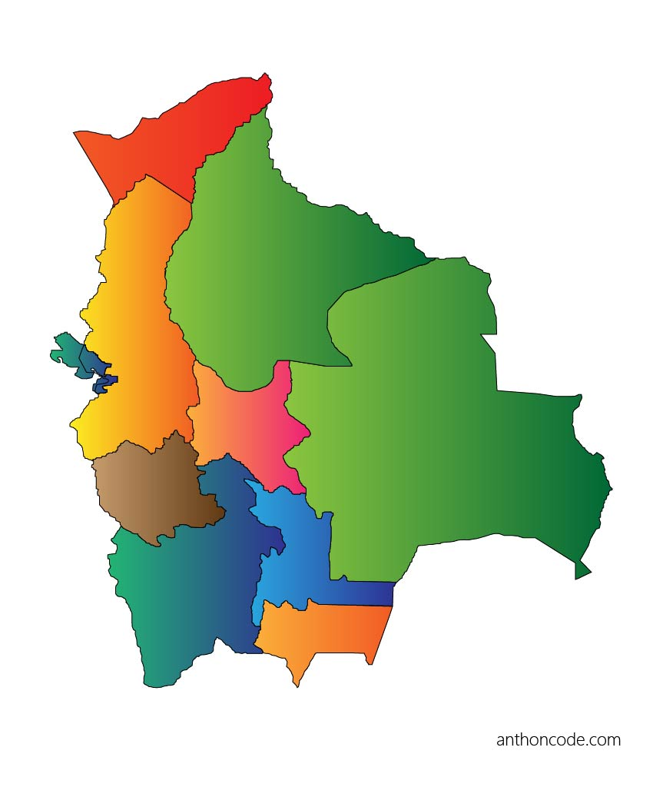

ARTICLE

Bolivia es un país del centro de Sudamérica, con un terreno variado desde los Andes, el Desierto de Atacama y el bosque pluvial en la cuenca del Amazonas. A más de 3,500 m de altura, su capital administrativa, La Paz, se ubica en el Altiplano de los Andes con el monte nevado Illimani de fondo. Cerca se encuentra el cristalino lago Titicaca, el más grande del continente, que se extiende por la frontera con Perú.